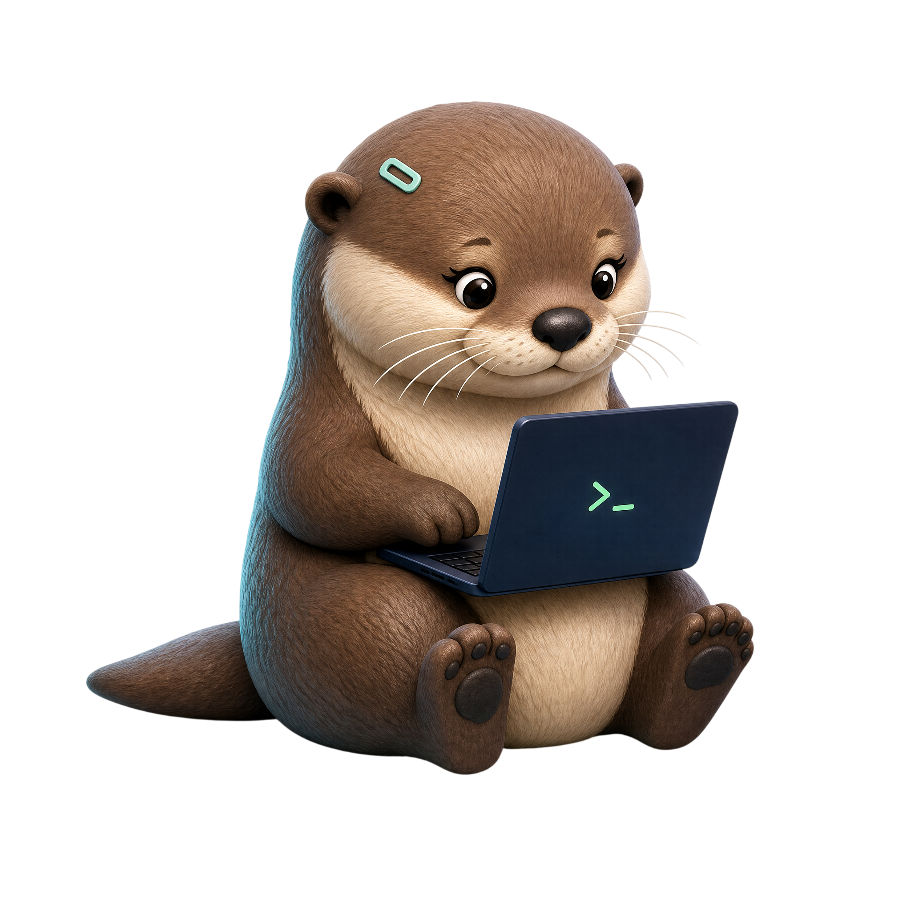
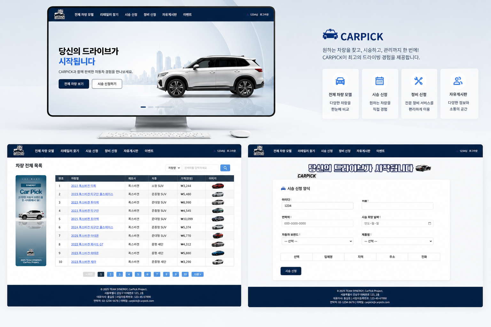
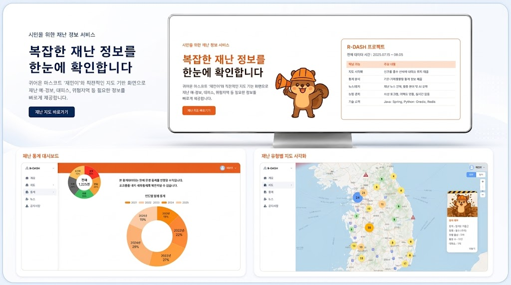

Profile
사용자의 흐름을 이해하고, 팀과 협업하기 쉬운 구조로 개발하는 것을 중요하게 여깁니다. 프론트는 UI와 반응형, 백엔드는 안정성과 효율성을 추구합니다.
- Name송예림 / 2003.10.01
- EducationIT콘텐츠융합학과 전공
- RoleFull Stack / Backend Developer
- FocusData Visualization · Optimization · System Structure

사용자 관점에서 문제를 정의하고, 데이터와 구조를 바탕으로 더 빠르고 안정적인 서비스를 만드는 백엔드 개발자입니다.
단순히 기능을 구현하는 것을 넘어 서비스의 목적과 사용성을 함께 고민합니다.
사용자의 흐름을 이해하고, 팀과 협업하기 쉬운 구조로 개발하는 것을 중요하게 여깁니다. 프론트는 UI와 반응형, 백엔드는 안정성과 효율성을 추구합니다.
복잡한 위치·공공 API 데이터를 사용자가 직관적으로 이해할 수 있는 정보로 가공합니다.
데이터 처리 병목을 찾아내고, 쿼리 최적화와 로직 개선으로 렌더링 속도를 다듬습니다.
변화에 유연하게 대응할 수 있도록 예외 처리와 모듈화가 잘 된 백엔드 구조를 설계합니다.


공공 데이터를 가공하여 실시간 재난 현황과 대피소 위치를 지도에 시각화해 제공하는 종합 정보 서비스입니다.
새로운 협업과 프로젝트 제안을 기다리고 있습니다.